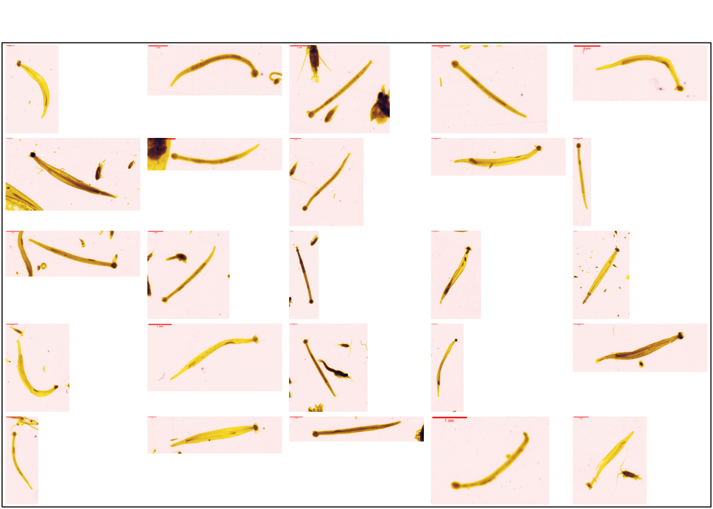
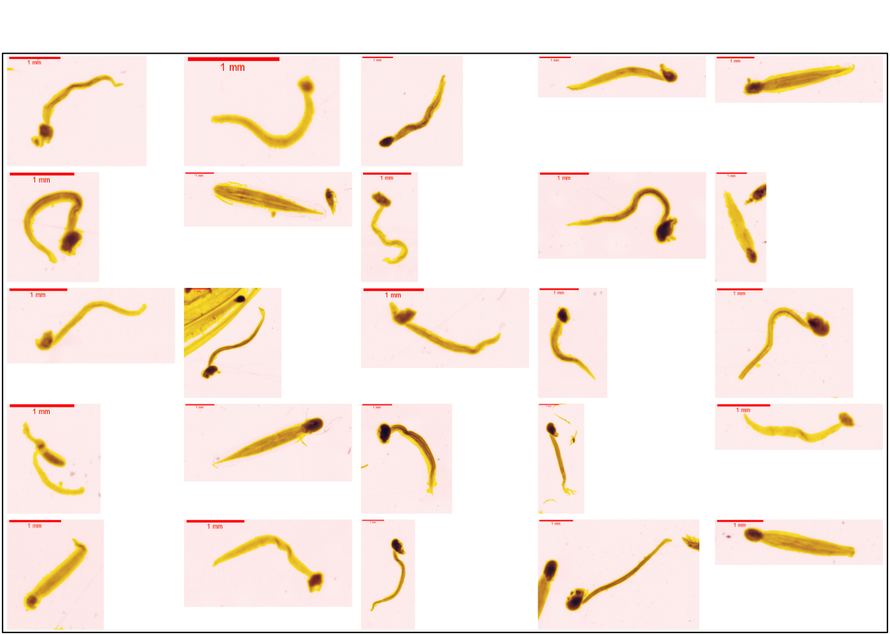

3 Tunicata - Chaetognatha
3.1 Chaetognatha
Les Chaetognatha, organismes carnivores, forment un phylum où une septantaine d’espèces sont pélagiques. Ils possèdent un corps séparé en trois parties (tête, tronc et queue) bien visibles, et sont surtout reconnaissables par la présence de crochets au niveau de la tête (Pierrots-Bults 2017) .
knitr::include_graphics(path = "figures/classif3/chaetognatha.png")
dir <- stringr::str_subset(direction, "Tunicata - Chaetognatha/Chaetognatha")
plot_classification(dir)
3.2 Tunicata
3.2.1 Appendicularia
3.2.1.1 Appendicularia complete
Les Appendicularia forment une classe au sein des Tunicata. Contrairement aux chaetognathes, leur corps est subdivisé en deux parties : le tronc et la queue. Le tronc secrète une « maison gélatineuse », qui sert à l’alimentation de l’organisme par filtration de petites particules présentes dans l’eau. Cependant, elle est généralement absente ou endommagée si l’échantillonnage est effectué avec un filet (Gorsky et Castellani 2017).
knitr::include_graphics(path = "figures/classif3/appendicularia_comp.png")dir <- stringr::str_subset(direction, "Appendicularia complete")
plot_classification(dir)
3.2.1.2 Appendicularia tails
Il n’est pas rare que, lors de l’échantillonnage, le tronc et la queue de l’appendiculaire se retrouvent séparés (Michaels et al. 1990). Ces queues sont reconnaissables de par leur forme étirée, ainsi que par la bande plus dense formée par les muscles de la queue. La notochorde peut parfois être visible, apparaissant comme une zone plus claire au milieu de la masse musculaire (Gorsky et Castellani 2017).
knitr::include_graphics(path = "figures/classif3/appendicularia_tails.png")
dir <- stringr::str_subset(direction, "Appendicularia tails")
plot_classification(dir)3.2.2 Thaliacea
A l’instar des Appendicularia, les Thaliacea forment une classe au sein des Tunicata. Dans cette étude, seules les familles Doliolidae et Salpidae sont considérées. Celles-ci possèdent une forme de baril, et sont aisément reconnaissables de par les bandes musculaires qui encerclent le corps (Licandro et Castellani 2017).
knitr::include_graphics(path = "figures/classif3/thaliacea.png")dir <- stringr::str_subset(direction, "Thaliacea")
plot_classification(dir)